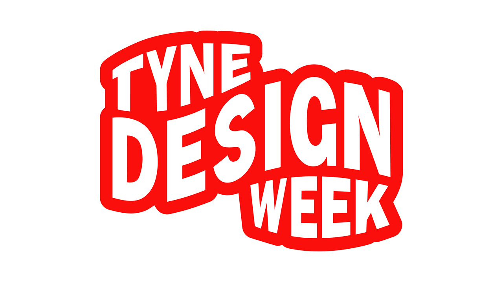

Tyne Design Week - What is UX and Tech Design
Paula Harrison & Lauren - Welcome
Paula Harrison is from Layers Studio based in Northern Design Centre which opened over ten years ago which has their offices here along with breakout spaces and booths. They wanted to be based here due to them being design focused and design led, and Layers Studio have been based here two and a half years. There is decent food nearby and their team prefer coming into the office here. Paula mentioned they have been in three difference office spaces in the building.
Lauren talked about the Northern Design Centre which has businesses that have to have design at their core, with over forty businesses here and there are different meeting rooms available, the breakout spaces are used quite a lot and there are kitchens and there is the Quayosk nearby and there are food vans every few weeks to get tenants to socialise and there are Summer Socials which includes meal, entertainment, dessert and drinks which gives everyone a chance to mingle and build working relationships.
What is UX and Tech Design? - James Hanson, Founder Layers Studio
Who are Layers Studio? They create digital experiences that users love, they build websites, web software, apps and take it from perspective of user first, they will educate client sometimes to understand perspectives. James worked for a few different agencies and found that agencies get siloed with not much interaction between them so was tired of factory line agencies and siloed departments and believe that designers, developers, marketers working together breeds better results. They wanted to create a different setup and had worked on projects where someone from a different department had worked on something. Everyone involved in a project should be involved in the discovery so get everyone together with different perspectives on the same problem.
What is UX design? This is how people feel when they interact with your product where good UX makes it effortless but bad UX is frustrating, causes dread, excludes users and makes them feel like an afterthought. Last year every startup at London Tech Week was an AI startup but this time around they have tools but have tools that are AI powered, so need to say what something does and why should we care about it. Layers Studio will start with research and data for UX design to gather as much information as possible and take as much information from client as possible and sometimes they don't know they have information or know how valuable it will be then will do user interviews to understand user needs as early as possible, they also do workshops with stakeholders to work out use case sometimes this is a seamless process but sometimes you make a big mess of user journeys to make sense of but is important to get client to see things that need to be considered.
What do the outputs look like? When they have done the initial discovery the next thing isn't flashy screens of UI but is starting with user stories which is super important and make sure information from discovery has been fed into stories to be able to achieve the goals and leads into user journeys and flows to understand needs along with technical spec to work out the use case with stakeholders. The decision to make an app is really important or what needs done it may be they need more traffic to an existing website rather than a new website and won't lead clients down a path where they are doing something they don't need or want to. An idea of scale for user journeys can be quite large with different parts of the flow being represented as part of a larger overall workflow and it can get quite big quite quickly and finding what is the best way to create impact.
How is it different from tech design is how the product functions technically from architecture, scalability and performance perspective and UX design is how users will interact with the technology including interface, usability and accessibility. These are intertwined and need to have conversations with technical team will inform how things are done on a user experience basis. The project constraints need to be then reflected such as budget, timeline, expertise and other constraints such as access or critical mass to market. When starting you could incrementally add filters if had categories for example. How to deliver good US is with a multi-skilled team from discovery to design with content, brand, UX and UI to development with frontend, backend and deployment. If something is not in discovery it is not in the project to avoid infinite scope of projects that go on forever.
Technical and engineering have to consider goals and rollout schedules so you don't have to build something huge you can start with the smallest thing that is possible. The thing that isn't stopping you from being successful isn't another feature, you need to launch with limited product first and then can get feedback that can change a plan. You need to consider scalability requirements so can be realistic about this so don't need to start massive but scale incrementally, technical debt is an issue in existing industries who want to digitise to help improve or speed things up but there are some choices they can't make so need to understand those roadblocks so need to work this out before you set off. Third party dependencies need to be considered which may be reliance on APIs and assuming these do the same thing all the time or are always reliable so need to make sure these are checked first, and consider that these things may change, even if the provides say things won't change it is often the case that this will change or have to assume it will but you have to know this when making decisions. Maintenance and support is often not considered or don't know what it takes to keep things going such as needing an internal team or continuing to work with Layers Studio.
Common mistakes are skipping research and assuming what users want. Prioritising aesthetics over usability, ignoring onboarding and first-time user experience, not optimising for mobile first design but making sure things work well on desktop, overcomplicating navigation and workflows which is a common one where clients keep adding things to menus or add a new thing but don't consider how it connects to other things or isn't really well thought out but also how to know how to streamline things. Good starting points include starting with a UX audit of your product, talk to users regularly which helps develop really good software and emboldens what decision to make next and that next goals align with user needs, make sure to prototype and test before building and keep iterating based on feedback which is easier the smaller you start so start as small as possible.
Using client data to understand what users what do, so do clients already have the relevant analytics available but if they don't have this available so can look at other good examples or can look at other metrics that are part of their goals that are outside of analytics, data is one thing but interpreting is another, so can setup a smaller scale start with this in place to gather information for future stages. Example of bad UX is Papa Johns where have to fight against their website or an example of something that was Vibe Coded which had a slider which sometimes slid the screen and something did the slider so wasn't a great experience, but it was a nice application which just needed a few fixes. Good examples include Monzo but bad example was HSBC when look a statement where most recent would normally be at the top but the bottom was the most recent which made paging or even printed not make sense, but Monzo and NatWest are great apps, but banks tend to have solutions built on old tech. ChatGPT has a simple interface where a limited number of options is great but can be confusing if you don't know what you are looking for.
Where has discovery changed the goal of the project which is one for a company that wanted to disrupt car dealerships and want to work out prices of second-hand car where you would put in details but they did some research where they felt awkward going on the app in front of the sales person but instead had no app where you just text a registration number and get information back which was easier to use. Another example was a mobile site which needed redone as they weren't getting usage but when adding analytics but it turned out people were using it but were just using the website before buying elsewhere but then would go back to desktop later to buy it so they had an idea to email a link to themselves which allowed them to track this behaviour where people started on mobile and resumed later on desktop.
Often problems can be due to things that are being overlooked so communication is key and need to make sure are speaking to the right people, or asking the right questions such as leading questions which can be done without people realising it so it can be tricky but also really interesting to make sure are doing something that will have a positive impact. They have worked on physical products that worked with an application which needed that feel of the product to be considered or have solutions that make sense. Overall, it makes sense sometimes to do what is best for the client so they can take anything on going forward.